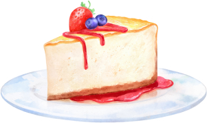

Fruit Cheesecake
This recipe for fruit cheesecake is simply delicious! The combination of the sweetness of strawberries with the slightly tart flavor of blueberries creates a fresh and balanced dessert. Moreover, the creamy texture of the cheesecake contrasts perfectly with the crunchiness of the biscuit base. If you're looking for an easy-to-make dessert that impresses your guests, this is the ideal recipe.
Ingredients:
- 200g of cornstarch biscuit
- 100g of butter
- 300g of cream cheese
- 1 can of condensed milk
- 1/2 cup of lemon juice
- 1 tablespoon of unflavored gelatin powder
- 1 cup of chopped strawberries
- 1 cup of blueberries
- Crush the biscuits and mix with the melted butter. Line a mold and refrigerate.
- Beat the cream cheese, condensed milk, and lemon juice. Add the dissolved gelatin.
- Pour over the biscuit base and refrigerate for 2 hours.
- Top with fruits and serve chilled.